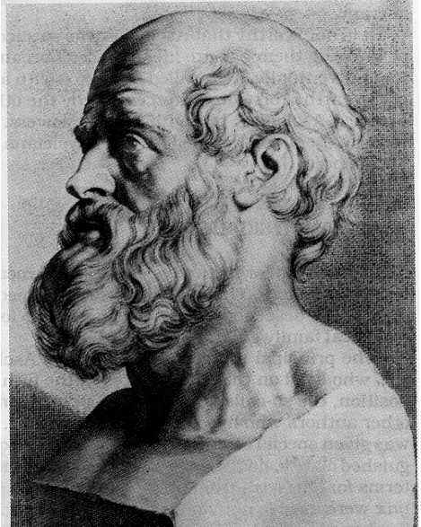
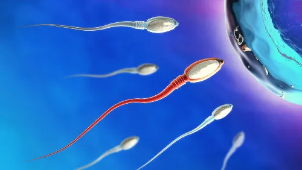
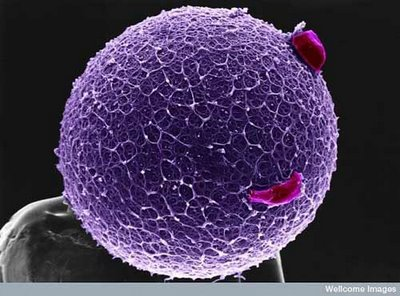
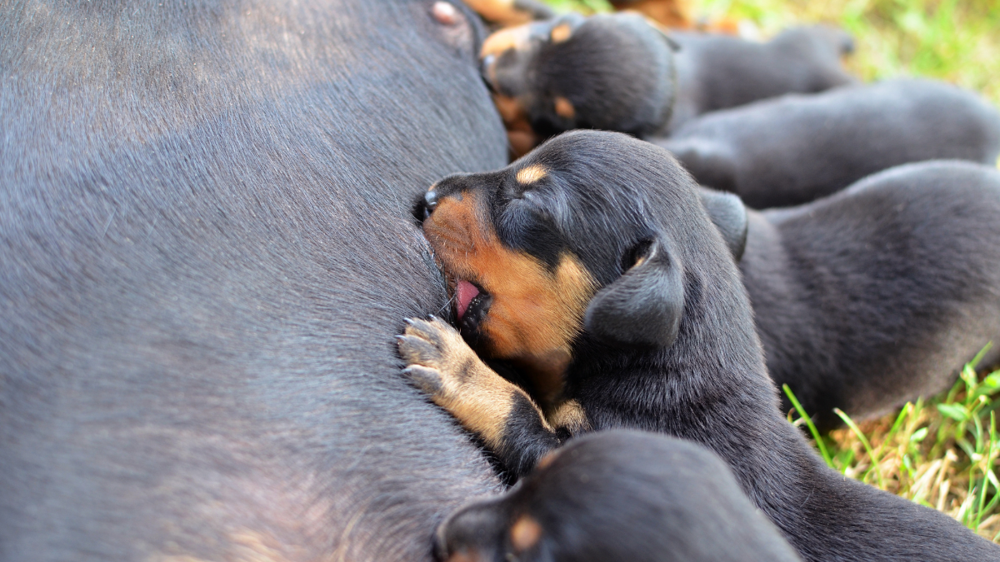
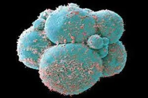
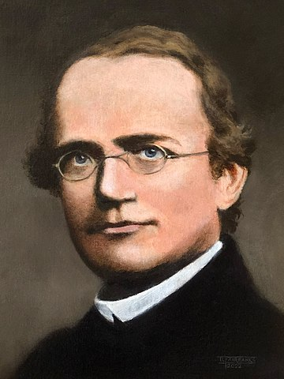

Unidade 4 - BIOLOGIA DO DESENVOLVIMENTO
Pangêsnese de Hipócrates
A pangênese é uma teoria proposta por Hipócrates que sugere que todas as partes do corpo de um organismo produzem pequenas partículas chamadas "gêmulas" ou "pangenes". Essas partículas contêm informações sobre suas respectivas partes do corpo e são coletadas e transmitidas para os descendentes através dos fluidos reprodutivos, como o sêmen. Durante a concepção, essas gêmulas se unem para formar um novo organismo, que herda características de ambos os pais. Embora pioneira em tentar explicar a hereditariedade, a teoria da pangênese foi posteriormente desacreditada com o advento da genética moderna, que revelou a importância dos genes e do DNA no processo de transmissão de características hereditárias.
Gametas
Os gametas são células reprodutivas especializadas que se fundem durante a fertilização para formar um novo organismo. Existem dois tipos principais de gametas: os espermatozoides, produzidos pelos machos, e os óvulos, produzidos pelas fêmeas. Cada gameta contém metade do número total de cromossomos de uma célula somática normal, um estado conhecido como haploidia. Durante a fertilização, o espermatozoide e o óvulo se unem para formar uma célula zigótica diploide, que possui um conjunto completo de cromossomos. Este processo garante a diversidade genética, pois combina material genético de ambos os pais. Os gametas são produzidos por meio da meiose, um tipo especial de divisão celular que reduz o número de cromossomos à metade e aumenta a variabilidade genética através de recombinação e segregação independente dos cromossomos.
Wolbachia

Wolbachia é um gênero de bactérias intracelulares que infectam uma ampla variedade de artrópodes e alguns nematódeos, manipulando frequentemente a reprodução de seus hospedeiros para favorecer sua própria propagação. Essas bactérias podem causar fenômenos como partenogênese, feminização de machos, morte de machos, e incompatibilidade citoplasmática, onde a reprodução entre indivíduos infectados e não infectados é inviável. Essas características tornam Wolbachia de grande interesse tanto na biologia evolutiva quanto no controle biológico de pragas e vetores de doenças. Por exemplo, infecções por Wolbachia em mosquitos têm sido exploradas como uma estratégia para reduzir a transmissão de doenças como a dengue e a malária.
Zigoto
O zigoto é a célula inicial formada após a fertilização, quando um espermatozoide se funde com um óvulo. Esta célula diploide contém um conjunto completo de cromossomos, metade de cada progenitor, marcando o início do desenvolvimento de um novo organismo. O zigoto passa por uma série de divisões celulares chamadas clivagens, que transformam uma única célula em uma bola de células chamada blastocisto, eventualmente levando ao desenvolvimento de um embrião. O zigoto carrega toda a informação genética necessária para o desenvolvimento e crescimento do novo organismo, representando a primeira etapa da reprodução sexual e o ponto de partida para a diferenciação celular e a formação de todos os tecidos e órgãos do corpo.
Gametas das plantas
Os gametas das plantas são células reprodutivas especializadas que se unem durante a fertilização para formar um novo organismo. Nas plantas com flores (angiospermas), os gametas masculinos são os grãos de pólen, que contêm células espermáticas, enquanto os gametas femininos são os óvulos, que contêm a oosfera. O processo de fertilização nas plantas envolve a polinização, onde os grãos de pólen são transferidos da antera (parte masculina da flor) para o estigma (parte feminina da flor). Uma vez no estigma, o pólen germina e forma um tubo polínico que cresce em direção ao óvulo. As células espermáticas viajam através deste tubo para alcançar e fertilizar a oosfera, resultando na formação de um zigoto que se desenvolverá em uma semente. Em plantas sem flores, como as samambaias e musgos, os gametas são produzidos em estruturas específicas chamadas gametângios, com anterozoides móveis nadando até a oosfera para a fertilização.
Desenvolvimento embrionario em animais
O desenvolvimento embrionário em animais é um processo complexo e fascinante que inicia com a fertilização, quando um espermatozoide se funde com um óvulo, formando um zigoto. Este zigoto passa por várias divisões celulares, chamadas clivagens, resultando em uma massa de células denominada blastocisto nos mamíferos ou blastula em outros vertebrados. As células continuam a se dividir e se diferenciar, formando os três folhetos germinativos: ectoderma, mesoderma e endoderma, que darão origem a todos os tecidos e órgãos do organismo. Este processo é regulado por uma rede intricada de sinais genéticos e moleculares que asseguram o desenvolvimento correto da estrutura corporal e funcionalidade do embrião. Ao longo das etapas seguintes, como a gastrulação e a organogênese, o embrião adquire forma e complexidade, eventualmente resultando em um organismo totalmente formado e funcional.
Segmentação, Gastrulação e Orgânogenese
A segmentação, gastrulação e organogênese são etapas essenciais no desenvolvimento embrionário dos animais. A segmentação é a fase inicial após a fertilização, onde o zigoto se divide repetidamente, formando uma massa de células chamada blastula. Em seguida, durante a gastrulação, a blastula reorganiza suas células em três camadas germinativas: ectoderma, mesoderma e endoderma, que estabelecem o plano corporal do embrião. A última fase, a organogênese, envolve a diferenciação dessas camadas germinativas em órgãos e sistemas específicos; o ectoderma forma o sistema nervoso e a pele, o mesoderma desenvolve músculos, ossos e o sistema circulatório, enquanto o endoderma origina o sistema digestivo e respiratório. Esse processo coordenado e regulado por sinais genéticos e moleculares resulta na formação de um organismo funcional e complexo.
O metódo de Mendel
O método de Mendel, desenvolvido pelo monge e cientista Gregor Mendel no século XIX, é a base da genética moderna. Através de suas experimentações com plantas de ervilha (Pisum sativum), Mendel formulou as leis da hereditariedade, observando como as características são transmitidas de uma geração para a outra. Ele identificou que certas características são determinadas por "fatores" (agora conhecidos como genes) que se segregam de forma independente durante a formação dos gametas. Suas duas leis principais, a Lei da Segregação e a Lei da Segregação Independente, descrevem respectivamente que os alelos de um gene se separam durante a meiose e que os alelos de genes diferentes se segregam de forma independente. O método de Mendel, com seu enfoque em cruzamentos controlados e análise estatística dos resultados, estabeleceu os princípios fundamentais que explicam a herança genética, revolucionando a biologia e proporcionando a base para a genética clássica e molecular.